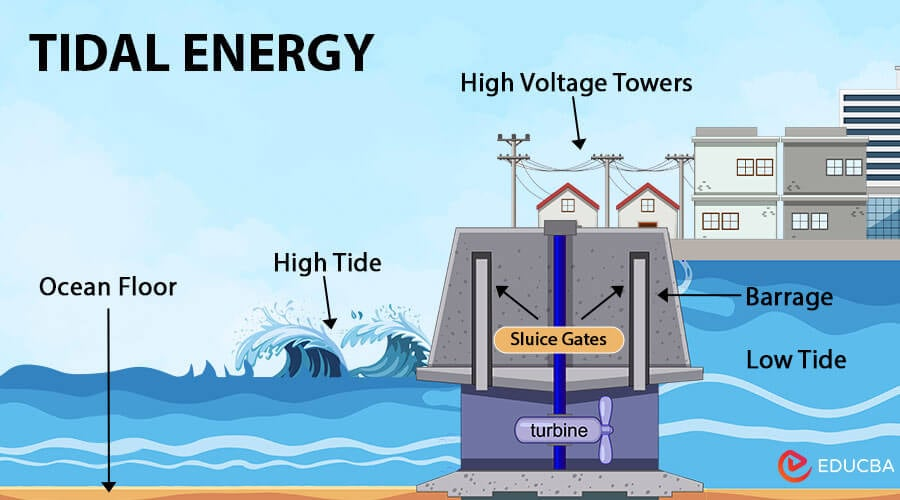

Activity 1: Tidal Power Plant
Prepare the architecture of a tidal power plant suitable for a coastal village.
System Diagram

Tidal Power Plant System Architecture
Complete system design showing tidal turbine placement, power generation flow, and grid connection
Key Components Shown:
Tidal Turbines
Underwater turbines that capture kinetic energy from tidal currents
Power Generation
Generators convert mechanical energy to electrical power
Grid Connection
Power transmission system connecting to the electrical grid
Control Systems
Monitoring and control systems for optimal operation
Technical Explanations
Source of Energy
The primary source is the gravitational interaction of the moon and sun that produces predictable sea-level changes (tides). The kinetic and potential energy of moving tidal waters is harvested at coastal sites with sufficient tidal range or tidal currents.
Conversion Process
During flood/ebb cycles, water is directed through engineered inlets and gates to flow across reaction turbines (e.g., Kaplan, bulb, or transverse turbines). Flowing water turns the turbine runner (mechanical energy), which drives a coupled generator producing electricity. Control gates and variable-speed turbines and electronic controls manage flow and optimize capture. In some designs a barrage stores high tidal head; in others, tidal stream turbines operate in-channel.
Output / Utilization
Electricity is stepped up by transformers and fed to the local distribution network or microgrid providing baseload or predictable intermittent power. A small pumped-storage loop can increase dispatchability by pumping water back at low-cost times.
Real-World Examples
Sihwa Lake Tidal Power Station
Location: South Korea
Capacity: 254 MW
The world's largest tidal power installation, demonstrating the viability of tidal energy for large-scale power generation.
La Rance Tidal Power Plant
Location: France
Capacity: 240 MW
One of the oldest operational tidal power plants, proving long-term reliability and sustainability of tidal energy systems.
MeyGen Tidal Energy Project
Location: Scotland
Capacity: 398 MW (planned)
A modern tidal energy project showcasing advanced turbine technology and grid integration capabilities.